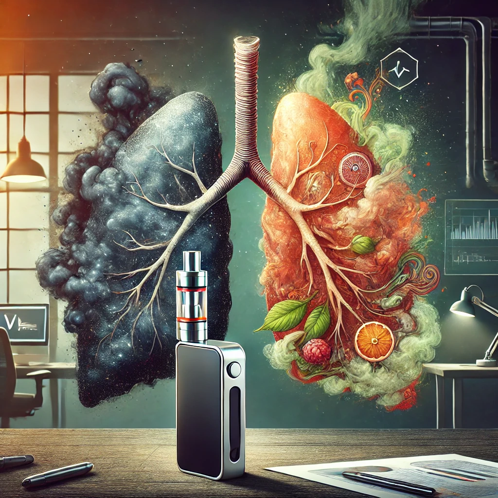
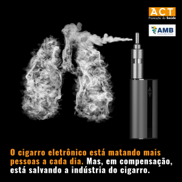

O cigarro eletrônico, também conhecido como vape, é um dispositivo eletrônico que aquece um líquido, geralmente contendo nicotina, produzindo um vapor que é inalado pelo usuário. Ele foi inicialmente concebido como uma alternativa aos cigarros tradicionais, mas seu uso tem gerado preocupações devido à falta de regulamentação e aos potenciais riscos à saúde.
Muitas pessoas acreditam que os cigarros eletrônicos são mais seguros que os cigarros tradicionais, mas isso não é verdade. A inalação do aerossol dos vapes pode causar diversos problemas de saúde, incluindo:
Dependência:A nicotina é uma substância que causa forte dependência química. A concentração de nicotina nos líquidos para vape pode ser bastante alta, o que aumenta o risco de vício.
Problemas respiratórios:O uso desses dispositivos pode causar lesões nos pulmões e doenças como asma e enfisema pulmonar.
Problemas cardiovasculares:A nicotina e outras substâncias presentes no aerossol podem afetar o ritmo cardíaco e aumentar o risco de infarto e AVC.
Outras substâncias tóxicas:O aerossol gerado pelos vapes não é apenas "vapor d'água". Ele contém diversas substâncias químicas, como formaldeído, que são tóxicas e podem aumentar o risco de desenvolver câncer. Risco de câncer:
As substâncias tóxicas, incluindo o formaldeído e outros produtos químicos, podem aumentar o risco de diversos tipos de câncer, como os de pulmão, bexiga e boca.
Problemas na saúde bucal:O uso de vapes também está ligado a um risco maior de desenvolver cáries, gengivite e outras doenças nas gengivas.
.jpg)
O uso de cigarros eletrônicos é especialmente preocupante entre os jovens. Além de todos os riscos já mencionados, a exposição à nicotina durante a adolescência pode prejudicar o desenvolvimento cerebral, afetando a atenção, a capacidade de aprendizado e o controle de impulsos. O cérebro de um adolescente ainda está em formação e é mais suscetível aos efeitos da nicotina e de outras substâncias.
Como para ou evitar fumar?Parar de usar cigarros eletrônicos, ou "vapes", pode ser um desafio, mas é totalmente possível. Muitas das estratégias para parar de fumar cigarros tradicionais também se aplicam nesse caso. O mais importante é se preparar e se comprometer com a decisão.
Preparar-se:Marque uma data para começar, identifique os momentos em que você mais sente vontade de fumar e crie novas rotinas para substituir esse hábito.
Buscar apoio:Converse com amigos e familiares sobre sua decisão e considere procurar ajuda de profissionais de saúde, como psicólogos ou médicos, para obter orientação e suporte.
Cuidar de si:Praticar exercícios físicos e encontrar outras atividades que ajudem a lidar com a ansiedade e o estresse são ótimas estratégias para manter o foco e evitar recaídas.
